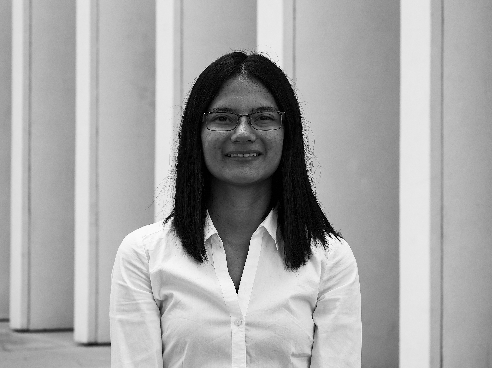

 Brenda Berenice Castellanos Sánchez
Producción de audio y sonidos para diversos
medios y eventos en vivo. Experimentación para
el diseño sonoro y experiencias sonoras 360°.
"Encuentra tu pasión y fusiona con ella, todo es posible"
FORMACIÓN ACADÉMICA
TEC DE MONTERREY
2016 - Presente |Ingeniería en
Producción Musical Digital
Educasound
2017| Técnico de sistemas de audio
para espectáculos
COLEGIO CULTURAL CUAUHTÉMOC
2014-2016|Preparatoria
HABILIDADES
Español
Nativo
Inglés
C1-BULATS
ProTools
110- AVID
Calibración y técnicas de
Diseño para sistemas
sonoros modernos
Intermedio- Merlijn Van
Veen
Gestión de eventos
Comunicaciones
Solución de problemas
EXPERIENCIA PROFESIONAL
CENART |
Directora de VideoMapping y Producción
-Diseño, supervisión, montaje de visuales que intaractúan en tiempo real con la obra "La
Mare del Peixos.
Auditorio Nacional | Microfonía
-La Orquesta Sinfónica de Minería en el Concierto Navideño Anual de Radiocentro.
Congreso NOISE | Logística
-Contacto con ponentes y proveedores, organización de experiencias, horarios y montaje del Congreso Internacional de Producción Musical
RUTINA SEMANAL
| HORA | LUNES | MARTES | MIÉRCOLES | JUEVES | VIERNES | SÁBADO |
|---|---|---|---|---|---|---|
| 7:00 AM - 9:00 AM | Fundamentos | Matemáticas | libre | Fundamentos | Matemáticas | Libre |
| 9:00 AM - 11:00PM | Electricidad | Circuitos | Electricidad | Circuitos | ||
| 11:00 AM - 1:00 PM | Ética | EVAP | Ética | EVAP | ||
| 1:00 PM - 4:00 PM | DESCANSO | |||||
| 4:00 PM - 7:00 PM | KUMON | |||||
| 7:00 PM | FIN DE JORNADA | |||||